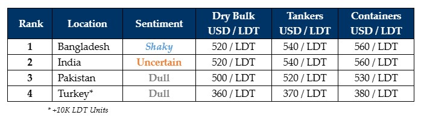

inWeekly Demolition Reports10/06/2024

An eventful week in the ship recycling industry saw the announcement of the Bangladeshi budget surprisingly deliver negative newsfor Chattogram’s ship recycling sector, in addition to the conclusion of India’s election cycle that has gripped the country since April 24th and pleasantly welcomed Mr. Narendra Modi being re-elected to govern as India’s Prime Minster on June 5th, for an unprecedented third term in the nation’s 2024 General Elections. Unfortunately, PM Modi’s ‘Bhartiya Janta Party’ (BJP), was unable to breach the minimum seats required to form a ruling government and this has subsequently left reliance on a coalition of several smaller parties as the only viable option for the BJP to govern – at least until the next Election cycle come May 2029.
While this stands to introduce adverse consequences of its own for the Indian market in the long run, Bangladesh’s proposed budget has surprisingly fallen short of appreciating, assessing, or even addressing the extent of the nation’s ongoing economic crises via establishing realistic targets and measures needed to correct recently erupted financial abnormalities as not only did the Taka decline further against the U.S. Dollar this week, but domestic steel plate prices also reported (unexpected) movements – and that too in the wrong direction. Wrapping up the sub-continent markets is the Pakistani market that continues to slip (in style) as domestic fundamentals seem to have little to no consequence on the mindset / performance of Gadani ship recyclers. Finally, Turkey’s languish on the side lanes continues making matters worse for Aliaga’s ship recycling fraternity, despite Turkish vessel offerings staying perched atop historical highs of their own.
At the macro level, as conflict surges on in the Middle East and incursions into Rafah continue unabated, further news of escalating counterattacks on passing merchant ships and even naval vessels by Houthi rebels in the Red Sea Shipping Lanes were once again reported this week, which will likely result in increasing logistical costs that only stand to apply further pressure on already high global inflationary numbers that have decimated certain economies worldwide.
Moreover, still riding the wake of firmer freight rates are the trading markets that have been surging over 3 quarters now, and as the consequent & ongoing shortage of tonnage is forecasted to continue unabashed for the foreseeable future, it certainly seems as though global ship recycling markets simply aren’t getting the break they have been suffering for, which is slowly turning into the tale of the ensnared wolf that is struggling to break free of its wolf trap, only by gnawing off its paw in order to be free again.
For week 23 of 2024, GMS demo rankings / pricing for the week are as below.

📄 Download PDF: Ship-recycling-market-insight-Week-23-6-07-2024-Wolf_Trap.pdfSource: GMS,Inc.https://www.gmsinc.net/gms_new/index.php/web